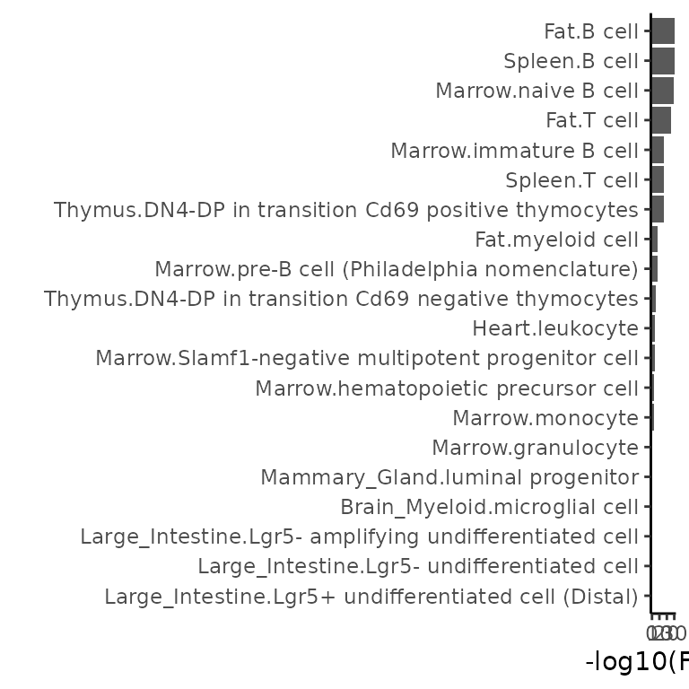
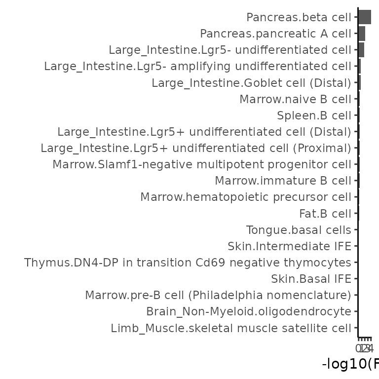
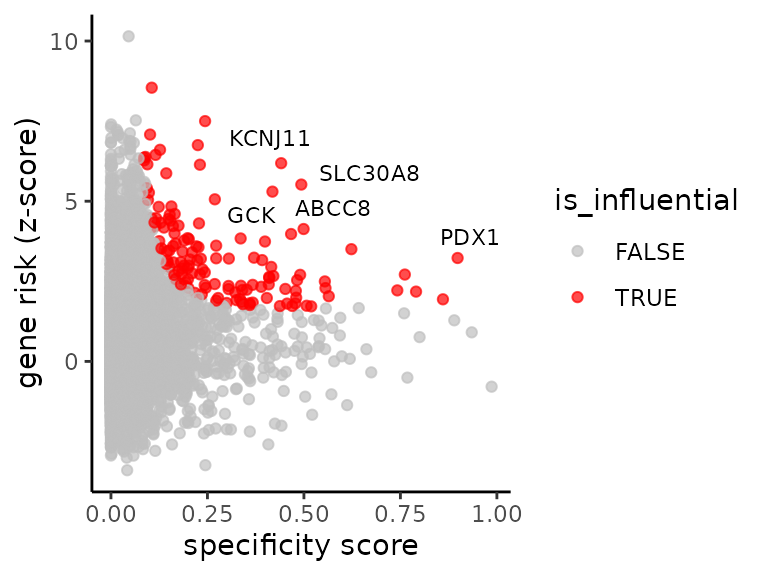
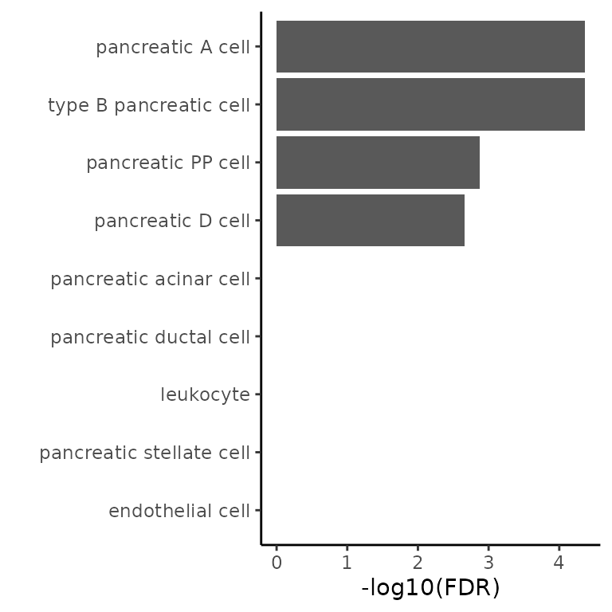

This vignette introduces the seismicGWAS package, an
implementation of the seismic framework for linking cell types
with traits using single-cell RNA-seq data and MAGMA summarized GWAS
data. We organize this vignette in two sections: Section 1 contains a
walk through using the sample data included with the
seismicGWAS package, and Section 2 walks through data
starting from a SingleCellExperiment object. In both cases, MAGMA is needed to produce
gene level GWAS summaries.
Setup
First, install and load the seismic package. If you have not yet
installed seismicGWAS, use
devtools::install(path_to_seismic_folder) or
devtools::install_github("ylaboratory/seismicGWAS").
Section 1: running seismic on the included sample data
seismicGWAS includes a preloaded small single cell RNAseq
dataset in the form of a SingleCellExperiment object
tmfacs_sce_small
tmfacs_sce_small
#> class: SingleCellExperiment
#> dim: 23341 4000
#> metadata(0):
#> assays(1): logcounts
#> rownames(23341): 0610005C13Rik 0610007C21Rik ... l7Rn6
#> zsGreen-transgene
#> rowData names(1): symbol
#> colnames(4000): M4.MAA000844.3_10_M.1.1 A18.MAA000388.3_11_M.1.1 ...
#> M5.MAA000910.3_10_M.1.1 L2.MAA000563.3_10_M.1.1
#> colData names(17): nReads orig.ident ... sizeFactor cluster_name
#> reducedDimNames(0):
#> mainExpName: RNA
#> altExpNames(0):and two sample MAGMA files, one for Rheumatoid Arthritis (Okada et al. 2013)
head(ra_magma)
#> GENE CHR START STOP NSNPS NPARAM N ZSTAT P
#> 1 148398 1 824993 889961 1 1 58284 -0.025069 0.51000
#> 2 339451 1 860967 911099 1 1 58284 -0.025069 0.51000
#> 3 84069 1 866872 920488 12 2 58284 -0.671780 0.74914
#> 4 26155 1 869583 929679 36 4 58284 -1.717100 0.95702
#> 5 84808 1 900579 952473 80 6 58284 -1.124900 0.86968
#> 6 9636 1 913847 959920 93 7 58284 -0.991290 0.83923and one for Type 2 Diabetes (Xue et al. 2018)
head(t2d_magma)
#> GENE CHR START STOP NSNPS NPARAM N ZSTAT P
#> 1 254173 1 1074286 1143315 21 3 572082 1.75840 0.039337
#> 2 8784 1 1128888 1177163 6 1 572870 1.93210 0.026671
#> 3 55210 1 1412523 1480067 9 1 569925 0.24436 0.403470
#> 4 339453 1 1460158 1510740 37 2 571069 0.14879 0.440860
#> 5 29101 1 1467053 1545262 39 2 571016 0.15608 0.437990
#> 6 9906 1 1646277 1712438 16 2 576212 -0.48124 0.684830Calculating cell type specificity scores
The first step of seismic is to calculate cell type
specificity scores which will be used for subsequent cell type-trait
association calculations and influential gene analyses. Here we provide
the sample SingleCellExperiment object and column in the data containing
cell type labels cluster_name.
tmfacs_sscore <- calc_specificity(tmfacs_sce_small, ct_label_col='cluster_name')
head(tmfacs_sscore[, 1:3]) # show a truncated view of the matrix
#> Bladder.Bladder mesenchymal cell
#> 0610005C13Rik 0.00000000
#> 0610007C21Rik 0.05171198
#> 0610007L01Rik 0.05053099
#> 0610007N19Rik 0.10618537
#> 0610007P08Rik 0.04881961
#> 0610007P14Rik 0.04976406
#> Bladder.Luminal bladder epithelial cell
#> 0610005C13Rik 0.000000e+00
#> 0610007C21Rik 5.416472e-02
#> 0610007L01Rik 5.907819e-02
#> 0610007N19Rik 4.726793e-05
#> 0610007P08Rik 6.890189e-02
#> 0610007P14Rik 6.196749e-02
#> Brain_Myeloid.microglial cell
#> 0610005C13Rik 3.639054e-19
#> 0610007C21Rik 3.768650e-02
#> 0610007L01Rik 3.409995e-07
#> 0610007N19Rik 4.422689e-185
#> 0610007P08Rik 2.758088e-08
#> 0610007P14Rik 2.225707e-17The original single cell experiment in the
tmfacs_sce_small was derived from Tabula Muris. To
associate with human GWAS traits we need to convert the gene
identifiers. For convenience seismicGWAS has a function for
translating between gene ids for a specificity score matrix. We change
here from mouse gene symbols to human entrez ids to match the MAGMA
data.
tmfacs_sscore_hsa <- translate_gene_ids(tmfacs_sscore, from='mmu_symbol')
head(tmfacs_sscore_hsa[,1:3]) # show a truncated view of the matrix
#> 6 x 3 Matrix of class "dgeMatrix"
#> Bladder.Bladder mesenchymal cell Bladder.Luminal bladder epithelial cell
#> 81932 2.542912e-04 0.01671191
#> 81577 5.003187e-04 0.01487892
#> 8614 9.234388e-02 0.02736780
#> 256281 3.213228e-07 0.08150739
#> 221687 0.000000e+00 0.00000000
#> 346389 0.000000e+00 0.17272120
#> Brain_Myeloid.microglial cell
#> 81932 7.503793e-12
#> 81577 3.645070e-10
#> 8614 0.000000e+00
#> 256281 7.970981e-07
#> 221687 0.000000e+00
#> 346389 0.000000e+00Calculating cell type trait associations
We can now get cell type-trait associations for the RA and Type 2 Diabetes data and plot the top 20 associations per trait. Default plots show FDR corrected p-values plotted on a -log scale so that stronger associations appear at the top of the boxplot.
# calculate and plot the cell type-trait associations for RA
ra <- get_ct_trait_associations(tmfacs_sscore_hsa, ra_magma)
plot_top_associations(ra, limit = 20)
# calculate and plot the cell type-trait associations for T2D
t2d <- get_ct_trait_associations(tmfacs_sscore_hsa, t2d_magma)
plot_top_associations(t2d, limit = 20)
Influential gene analysis
With seismicGWAS we can also look at the genes driving a particular cell type-trait association, in a process we call influential gene analysis. Here, we need to select a particular cell type (in our example we choose pancreas beta cell) and a trait (we use Type 2 Diabetes again). It is important to note that influential gene calculations are only meaningful for cell type-trait associations that are significant. So we have chosen a cell type and trait that were found to be significant in the cell type-trait associations above.
# calculate influential genes
ct <- "Pancreas.beta cell"
t2d_beta_inf_genes <- find_inf_genes(ct, tmfacs_sscore_hsa, t2d_magma)
head(t2d_beta_inf_genes)
#> gene specificity zstat dfbetas is_influential
#> <char> <num> <num> <num> <lgcl>
#> 1: 3767 0.4410499 6.1866 0.1941221 TRUE
#> 2: 169026 0.4932408 5.5197 0.1886886 TRUE
#> 3: 2645 0.4184336 5.2990 0.1513507 TRUE
#> 4: 3651 0.8982126 3.2276 0.1386102 TRUE
#> 5: 6833 0.4991599 4.1322 0.1293991 TRUE
#> 6: 7466 0.2439394 7.5000 0.1256267 TRUENote: Only genes with positive contributions to the cell type-trait association are marked influential by default. While negative contributions may be informative, they are not as directly interpretable and are driven by genes from other cell types or are somewhat cell type specific but not associated with the given trait.
Next, to aid in result interpretation we convert the Entrez gene id to human-readable gene symbols using mouse genome wide annotation database (org.Hs.edg.db) and AnnotationDbi.
# convert ids to symbols using org.mm.eg.db and AnnotationDbi
library(org.Hs.eg.db) #make sure it has been installed
hsa.map <- mapIds(org.Hs.eg.db, keys = t2d_beta_inf_genes$gene, keytype = "ENTREZID",
column = "SYMBOL")
hsa.map <- stack(hsa.map)
colnames(hsa.map) <- c("symbol", "entrezid")
t2d_beta_inf_genes <- merge(t2d_beta_inf_genes, hsa.map,
by.x='gene', by.y='entrezid')We can also use the gene symbols to label the influential points in the influential gene plot.
# plot influential genes
plot_inf_genes(t2d_beta_inf_genes, gene_col = 'symbol', num_labels = 5)
Section 2: running seismicGWAS on Tabula Muris Senis
Generally, we assume that users will be able to construct and
appropriately normalize their single cell data before using
seismicGWAS. For these tasks we recommend using the
scran package.
In this section we illustrate how to run the seismicGWAS
package on a real world single cell dataset from Tabula Muris. For
convenience we use the scFind
package to grab tissue level SingleCellExperiment objects.
Grabbing Tabula Muris pancreas data with scFind
For simplicity, we grab one tissue type’s worth of data from the
scfind package.
# if scFind is not installed can install with devtools
# devtools::install_github("hemberg-lab/scfind")
library(scfind)
library(SingleCellExperiment)
sce_panc <- readRDS(url(tmfacs["Pancreas"]))Explore the SCE object to find the relevant cell type column. If one did not exist, or one did not exist with our desired specificity, we could create it by clustering, combining, or using other metadata and adding to the SCE object before continuing.
colData(sce_panc)
#> DataFrame with 1961 rows and 7 columns
#> mouse well cell_type1 tissue
#> <factor> <factor> <factor> <factor>
#> B21.MAA000574.3_8_M.1.1 3_8_M B21 NA Pancreas
#> D12.MAA000574.3_8_M.1.1 3_8_M D12 NA Pancreas
#> B22.MAA000574.3_8_M.1.1 3_8_M B22 NA Pancreas
#> D13.MAA000574.3_8_M.1.1 3_8_M D13 leukocyte Pancreas
#> C1.MAA000574.3_8_M.1.1 3_8_M C1 NA Pancreas
#> ... ... ... ... ...
#> I9.MAA001868.3_38_F.1.1 3_38_F I9 pancreatic acinar cell Pancreas
#> K10.MAA001868.3_38_F.1.1 3_38_F K10 NA Pancreas
#> M19.MAA001868.3_38_F.1.1 3_38_F M19 pancreatic acinar cell Pancreas
#> O9.MAA001868.3_38_F.1.1 3_38_F O9 NA Pancreas
#> P16.MAA001868.3_38_F.1.1 3_38_F P16 NA Pancreas
#> subtissue FACS sex
#> <factor> <factor> <factor>
#> B21.MAA000574.3_8_M.1.1 Exocrine Viable M
#> D12.MAA000574.3_8_M.1.1 Exocrine Viable M
#> B22.MAA000574.3_8_M.1.1 Exocrine Viable M
#> D13.MAA000574.3_8_M.1.1 Exocrine Viable M
#> C1.MAA000574.3_8_M.1.1 Exocrine Viable M
#> ... ... ... ...
#> I9.MAA001868.3_38_F.1.1 Exocrine Viable F
#> K10.MAA001868.3_38_F.1.1 Exocrine Viable F
#> M19.MAA001868.3_38_F.1.1 Exocrine Viable F
#> O9.MAA001868.3_38_F.1.1 Exocrine Viable F
#> P16.MAA001868.3_38_F.1.1 Exocrine Viable FThe cell_type1 field contains the cell annotations that
we can use for calculating cell specificity scores. Right now there are
some NA values for field. Lets remove them before
continuing.
# remove cells with NA from the SCE object
sce_panc_filt <- sce_panc[,!is.na(colData(sce_panc)$cell_type1)]
colData(sce_panc_filt)
#> DataFrame with 1327 rows and 8 columns
#> mouse well cell_type1 tissue
#> <factor> <factor> <factor> <factor>
#> D13.MAA000574.3_8_M.1.1 3_8_M D13 leukocyte Pancreas
#> D14.MAA000574.3_8_M.1.1 3_8_M D14 pancreatic acinar cell Pancreas
#> C5.MAA000574.3_8_M.1.1 3_8_M C5 pancreatic acinar cell Pancreas
#> A3.MAA000574.3_8_M.1.1 3_8_M A3 pancreatic PP cell Pancreas
#> C11.MAA000574.3_8_M.1.1 3_8_M C11 pancreatic acinar cell Pancreas
#> ... ... ... ... ...
#> M16.MAA001868.3_38_F.1.1 3_38_F M16 pancreatic acinar cell Pancreas
#> M17.MAA001868.3_38_F.1.1 3_38_F M17 pancreatic acinar cell Pancreas
#> P15.MAA001868.3_38_F.1.1 3_38_F P15 pancreatic acinar cell Pancreas
#> I9.MAA001868.3_38_F.1.1 3_38_F I9 pancreatic acinar cell Pancreas
#> M19.MAA001868.3_38_F.1.1 3_38_F M19 pancreatic acinar cell Pancreas
#> subtissue FACS sex sizeFactor
#> <factor> <factor> <factor> <numeric>
#> D13.MAA000574.3_8_M.1.1 Exocrine Viable M 1.9765270
#> D14.MAA000574.3_8_M.1.1 Exocrine Viable M 1.2732105
#> C5.MAA000574.3_8_M.1.1 Exocrine Viable M 0.7804386
#> A3.MAA000574.3_8_M.1.1 Exocrine Viable M 0.0969612
#> C11.MAA000574.3_8_M.1.1 Exocrine Viable M 1.4387834
#> ... ... ... ... ...
#> M16.MAA001868.3_38_F.1.1 Exocrine Viable F 0.1675565
#> M17.MAA001868.3_38_F.1.1 Exocrine Viable F 0.0712616
#> P15.MAA001868.3_38_F.1.1 Exocrine Viable F 0.1585532
#> I9.MAA001868.3_38_F.1.1 Exocrine Viable F 0.2143557
#> M19.MAA001868.3_38_F.1.1 Exocrine Viable F 0.2392390Calculating cell type-trait associations
Now we can calculate the cell type specificity scores we will need for other downstream functions.
# calculate cell specificity
panc_sscore <- calc_specificity(sce_panc_filt, ct_label_col='cell_type1')
head(panc_sscore[,1:4]) # show a truncated view of the matrix
#> endothelial cell leukocyte pancreatic A cell
#> 0610007C21Rik 1.925564e-02 8.198702e-08 1.996716e-01
#> 0610007L01Rik 2.031098e-03 8.280322e-06 1.576197e-01
#> 0610007N19Rik 4.378839e-13 0.000000e+00 5.664380e-19
#> 0610007P08Rik 3.511300e-13 2.826381e-05 1.804820e-01
#> 0610007P14Rik 1.026578e-03 6.615702e-06 1.918313e-01
#> 0610007P22Rik 1.052606e-04 8.502420e-03 1.250415e-01
#> pancreatic acinar cell
#> 0610007C21Rik 8.149700e-216
#> 0610007L01Rik 3.567238e-43
#> 0610007N19Rik 6.355130e-02
#> 0610007P08Rik 3.894345e-12
#> 0610007P14Rik 5.294229e-107
#> 0610007P22Rik 7.515759e-21Since we are using a subset of Tabula Muris it is time again to convert mouse gene symbols to human entrez ids before continuing so that we can match the identifiers in the human Type 2 Diabetes GWAS data.
panc_sscore_hsa <- translate_gene_ids(panc_sscore, from='mmu_symbol')
head(panc_sscore_hsa[,1:4]) # show a truncated view of the matrix
#> 6 x 4 Matrix of class "dgeMatrix"
#> endothelial cell leukocyte pancreatic A cell pancreatic acinar cell
#> 81932 0.004922072 0.000000e+00 2.088431e-01 6.213640e-04
#> 81577 0.119625749 1.955628e-16 1.127160e-01 3.838398e-31
#> 8614 0.000000000 0.000000e+00 2.420464e-05 1.766824e-01
#> 256281 0.004280693 9.500268e-03 1.938377e-01 8.279519e-95
#> 221687 0.000000000 0.000000e+00 1.659393e-37 0.000000e+00
#> 346389 0.000000000 0.000000e+00 1.067150e-07 1.468089e-05Finally, we can calculate cell type-trait associations as before.
panc_t2d <- get_ct_trait_associations(panc_sscore_hsa, t2d_magma)
plot_top_associations(panc_t2d, limit = 20)